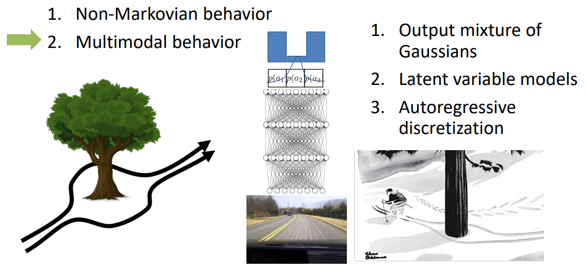

世界范围内，做游戏AI的公司主要就是DeepMind和OpenAI，前者有AlphaZero、IMPALA和AlphaStar，后者有OpenAI Five，本文对这两个公司做游戏的主要知识结构做简单梳理
1. PPO的目标函数
PPO有两种目标函数形式，第一种一般简称adaptive KL
第二种一般被称作clipped surrogate
其中
- $\theta$ 是policy模型的参数，$\pi_{\theta}$ 是我们要训练迭代的模型
- $\pi’$ 是迭代之前旧的policy模型，一般做法是初始化两个结构相同的网络，使用$\pi’$ 与环境交互得到的训练数据 (trajectory) 更新 $\pi$ ，若干步后把 $\pi$ 的参数全部copy给 $\pi’$
- $A^{\pi}(s_{t},a_{t})=Q^{\pi}(s_{t},a_{t})-V^{\pi}(s_{t})=R_{t}+\gamma{V^{\pi}(s_{t+1})}-V^{\pi}(s_{t})$ 是advantage function
- $\epsilon$ 一般取0.1之类的
- $D_{KL}(\pi’||\pi)=\mathbb{E}_{s_{t}\sim{d^{\pi’}(s)}}\mathbb{E}_{a_{t}\sim\pi’}[\log(\frac{\pi’(a_{t}|s_{t})}{\pi(a_{t}|s_{t})})]$ ，就是常说的KL divergence。对于离散空间直接两个交叉熵除一下即可；对于连续空间一般会采用reparameterization-trick将网络参数化成一个Gaussian distribution （就是让网络输出两个向量一个代表 $\mu$ 一个代表 $\sigma$ 然后从中采样），两个Gaussian之间的KL有闭式解
- $V^{\pi}(s)=\mathbb{E}_{\pi}[\sum_{t=0}^{\infty}\gamma^{t}R_{t}]$ ，等号右边这个东西叫做 total discounted reward，是所有强化学习算法优化的最终目标，一般参数化成价值网络的形式，直接用监督学习训练，近几年的强化学习算法普遍采用GAE来估计 total discounted reward
1.1. 设计这种目标函数的目的
- 这两种目标函数的目的都是为了近似自然梯度 $\tilde{g}=F^{-1}g=(\nabla^{2}_{\theta}KL(\pi’||\pi_{\theta}))^{-1}g$ ， 式中的 $F$ 是 Fisher information matrix， 由 $F$ 可以确定一个在概率空间中具有不变性的黎曼度量，使得 $F^{-1}g$ 是逆变向量，i.e., 由 $F^{-1}g$ 所确定的自然梯度与 $\pi_{\theta}$的参数化形式无关，因而拥有较小的训练方差
- 在bounded KL范围内迭代可以有单调提升的（弱）bound： i.e., 在 bounded KL ball 中迭代policy可以保证收敛的稳定
- off-policyness：可以用从 $\pi’$ 中采样得到的trajectory优化 $\pi_{\theta}$，这样做有利于实现分布式计算框架，但其实可以想到这个迭代速度不会很快，因为PPO的目标函数形式限制了每步迭代中 $D_{KL}(\pi’||\pi_{\theta})$ 的大小，且每次更新完以后都要把 $\pi_{\theta}$ 的参数copy回去给 $\pi’$
个人经验，训练时要尤其关注KL的变化，KL bound得比较好的话，policy的improvement是有理论保障的；反之如果bound的不好，有时会出现 policy 的退化现象，越训练越差
1.2. References
2. GAE的简单解释
全称 generalized advantage estimator，出自论文High-Dimensional Continuous Control Using Generalized Advantage Estimation，in a word，其最终目的是在 advantage function $A(s,a)=Q(s,a)-V(s)$ 的各种估计方式估计中找一个bias-variance tradeoff 的平衡点

以上六种policy gradient的形式中，3拥有最小的理论方差，但实际计算中由于复杂度问题一般会采用5
一种估计 $A^{\pi}(s_{t},a_{t})$ 的方法是把整个trajectory的reward都考虑在内,这种估计方式有较小的bias和较大的variance：
另一种方式是利用已有的 $V(s)$ 函数进行辅助估计，这种方法有较大的bias与较小的variance：
也可以构造出介于两者之间的形式，总结为：
在以上所有形式的advantage estimator中取bias-variance平衡点的方法，就是使用从 $\hat{A}_{t}^{(1)}$ 到 $\hat{A}_{t}^{(\infty)}$ 的几何平均：
3. AlphaStar: Mastering the Real-Time Strategy Game StarCraft II

DeepMind用来做星际2的框架，里面包含的内容非常多
- 模型采用off-policy的actor critic，加experience replay、self-imitation learning以及policy distillation
- 为保证策略的多样性，先用SL训练一个baseline的模型（上图001），然后在每段iteration开始时,从前一轮iteration的模型中copy几个相同的出来进行自对弈，每个模型的超参都不一样，甚至reward定义都不一样，用PBT训练。上一轮迭代的模型不再更新，称之为frozen competitor，采用和人类玩家天梯匹配系统类似的方式设计自对弈中的对手匹配系统
- 用了transformer结构输出每个unit的action，结合了pointer network以及centralized value baseline
3.1. Population based training of neural networks
简称PBT，出自DeepMind论文Population based training of neural networks，见DeepMind博客地址
本质就是用genetic algorithm的思路来做hyper-parameter tuning：同时训练N个模型，每个模型有自己的一套超参，训练一段时间，取部分效果较好的模型，在其超参基础上做一些外延探索，并继续训练模型
这样的做法也可以防止模型陷入局部最优
3.2. Policy distillation

Policy distillation的原始论文中，teacher是DQN，这一点和我们这边差别很大，我们一般用policy gradient类的方法可以直接蒸馏，不存在作者文章中讨论的各种不同的loss问题
对于student网络的蒸馏，作者在文章中试验了三种不同的loss
- 将student参数化为 $\pi_{\theta}:\mathcal{S}\rightarrow{\mathcal{A}}$ 的形式，直接从DQN的replay memory中拿之前的数据出来当做action的标签
- 将student参数化为 $Q:\mathcal{S}\times\mathcal{A}\rightarrow\mathbb{R}$ 的形式，loss用均方误差
- 将student参数化为 $Q:\mathcal{S}\times\mathcal{A}\rightarrow\mathbb{R}$ 的形式，将student和teacher网络输出的Q值都过一个softmax，然后用Hinton论文里的KL散度作为loss
实验结果表明第三种loss效果最好
3.3. Centralized value baseline
出自DeepMind发表在AAAI-2018的文章 Counterfactual Multi-Agent Policy Gradients，idea很简单，就是对于multi-agent问题场景，所有的actor共享一个critic
这个idea很像是OpenAI那篇 Multi-agent actor critic 的弱化版，OpenAI那篇好歹认真考虑了 multi-agent 设定下存在的 non-stationary MDP 问题，DeepMind这篇直接无视掉了这一点，侧面说明可能理论上存在的 non-stationary MDP 问题实际在工程上并不影响模型效果
3.4. Transformer
以下内容参考了博客 The Illustrated Transformer 与 Google Brain的原始paper “Attention is All You Need”
Transformer是BERT的基础，NLP任务从此开始走上了【去RNN】化的道路
简单来说，这篇文章只用attention和feed-forward network就在很多任务上取得了很好的效果，主要有几部分组成
- Self-attention, encoder-decoder attention, and multi-head attention
- Feed-forward network
- Positional encoding
- Residual blocks
首先解释 self-attention

其中self-attention形式为
一图胜千言
然后是encoder-decoder attention
这个attention和之前seq2seq中的attention其实是一样的
The encoder start by processing the input sequence. The output of the top encoder is then transformed into a set of attention vectors K and V. These are to be used by each decoder in its “encoder-decoder attention” layer which helps the decoder focus on appropriate places in the input sequence
Multi-head attention: 说白了就是在同一层堆叠多个self-attention，作用主要有两点
- It expands the model’s ability to focus on different positions
- It gives the attention layer multiple “representation subspaces”
Positional Encoding
此外transformer网络中还用到了residual block来防止由于网络过深导致梯度退化

4. MOBA游戏AI中一些难做的问题
提纲
- SL的问题
- distributional shift
- multi-modal policy
- interaction with environment的成本问题
- GAIL系列工作：高方差，训练不稳定
- 高方差
4.1. Imitation learning
SL/behavior cloning对于实际应用场景而言是最简单快捷的方法，然而由于distributional shift问题的存在，这种方法在MDP上没有任何理论保障，即使你是在应用场景下不在乎理论性质，除非expert demonstration的state可以铺满整个MDP的state空间，否则学出来的agent大概率是没有任何泛化能力的
另一个问题是对于连续动作空间的multi-modal policy，Sergey Levine在上CS294-112课程时曾经给出一张非常形象生动的图片来说明这个问题

网上很多人吐槽过王者荣耀的AI会在塔前有规律地反复徘徊，凭借这点可以很轻松地判断出一个player是AI还是人类——这个问题很大程度上就来源于multi-modal policy。连续空间的regression会倾向于学习到训练数据中的均值，然而mutli-modal policy下均值可能并不是一个好的policy
那么是否可以通过把连续的动作空间强行切成离散的来避免这个问题呢？In theory，这样做会破坏掉MDP中action
space本来的性质，其次这样的做法可能会带来额外的高方差 [参见另一篇blog]，但是in practice这样的做法其实效果不差
此外一个根深蒂固但大部分时间里都被RL研究者们无视的问题是与environment交互的成本与效率问题，我们在gym或Atari上做实验的时候可以无限采样，效率低就开多线程或者多进程跑，然而现实中很多场景下，agent与environeent交互都是受制于各种成本的。目前为止几乎所有的方法都必须要和environment去做交互，才可以保障agent的稳定训练。在此基础上，2018年AILab发在NIPS的文章Exponentially Weighted Imitation Learning for Batched Historical Data另辟蹊径地提出了一个问题：如果我们有很多的triplet形式的historical data $(s_{t},a_{t},r_{t})$，但无法与environment做交互，是否还可以做imitation learning呢？
如果我们用behavior cloning的方法直接训练，实际上很大程度上浪费掉了训练数据中reward signal中包含的信息，这篇文章的方法是用$\exp(\beta{A(s_{t},a_{t})})$来对每条训练数据加权，从直觉上来讲，这样的做法会鼓励模型去更多地学习带来带来高advantage值的动作。不可思议的是，这么简单一个方法居然有theoretical improvement guarantee
文章最后提到这种方法也可以用来做纯RL模式的学习，即没有人类数据的情况下，用agent与环境交互的数据训练agent，然后再把agent放到环境里交互，这种方法是纯off-policy的，我没有看出来这种off-policy的方法比SAC，IMPALA之类的方法好在哪里
Imitation learning中另一类不得不提的方法是GAIL，这个方法自从被提出之后一直在research中备受关注，其中一个原因在于其理论框架非常有美感：原始GAIL文章中，作者针对inverse RL需要在学习reward的内循环中训练RL agent问题，理论证明了$IRL(RL(\pi,R))$是occupancy measure matching的对偶问题，因而imitation learning可以直接套用GAN的框架，通过交替迭代policy与discriminator来优化；后续AIRL中又证明了当特定参数化形式的discriminator下（类似于reward shaping的形式），AIRL可以在训练中逐渐恢复出真正的reward+一个constant；2017年大热的WGAN和WGAN-GP也为GAIL类方法的训练不稳定问题提出了新的解决方案；继info-GAN之后的info-GAIL结合了PGM与GAIL，为unsupervised inference of expert demonstration提供了信息论基础
然而真正落地的application中，据我所知完全没人用这类看起来很高大上的方法，原因在于：
第一，这类Imitation learning方法几乎从未outperform hand-crafted reward，哪怕有时这种hand-crafted reward很粗糙。在ICLR-2019的variational information bottleneck文章中，作者总结
One advantage of adversarial methods is that by leveraging a discriminator in
place of a reward function, they can be applied to imitate skills where reward functions can be
difficult to engineer. However, the performance of policies trained through adversarial methods still
falls short of those produced by manually designed reward functions.
第二，GAN本身就是出了名的不稳定难训练，而这种不稳定再加上RL的高方差、高样本复杂度问题，可以说是把近年来机器学习领域内最令人头疼的问题汇集到了同一套算法中。在此基础上加时序套RNN是一个简单但通用的思路
第三，representation问题
4.2. Hybrid action space
- Hierachical RL: unsupervised inference of macro-strategy from micro-policy
- Representation of state space
- Action embedding?
这点上MOBA-games与mujoco有点类似：action space不是一个动作，而是很多个动作的组合。例如在王者荣耀中某一时刻下的action，有的维度代表的是放哪个技能，有的维度代表的是方向型技能的施法方向，有的维度代表的是当前英雄的移动方向
4.3. Reward
4.3.1. Long term delayed reward
如果用类似AlphaGo的方式，只采用最后输赢作为binary reward，每个trajectory将会非常非常长，可以参考OpenAI这篇blog，里面有提到他们用这种binary reward来训练1v1的bot
We ran an experiment where we only rewarded the agent for winning or losing, and it trained an order of magnitude slower and somewhat plateaued in the middle, in contrast to the smooth learning curves we usually see.

与之对立，图中橙色dense的曲线对应的方法是人工定义reward。虽然我目前还没做过这方面的工作，想来应该是非常琐碎复杂的——因为reward是RL最终优化的目标，reward稍微改变一点点都可能会完全改变MDP优化的整体结构
4.3.2. Reward definition in OpenAI Dota2 program
在OpenAI Dota2项目中，reward定义有几个trick
- Team spriit: 每个英雄的reward都会加上其他英雄的reward平均值乘以一个系数
1
camp_hero_reward[i] = camp_hero_reward[i] + coeff * (sum(camp_hero_reward) - camp_hero_reward[i])
- Zero-sum: 为了保证双方绝对不可能存在合作的可能性，设定双方的reward加起来恒等于0
1
camp_hero_reward[i] -= mean(enemy_hero_reward)
- Time decay: 比赛后期的reward可能比比赛前期的大很多，因为英雄装备起来以后刷钱速度提升，团战频率也大了很多，如果不对比赛不同阶段的reward做特殊处理，可能模型会特别重视后期的reward，而后期的reward很大程度上源于前期的积累，因此将前期的reward和后期的reward做一个平衡
为什么我们一定要在reward的层面保障双方绝对不能有合作的可能性呢？我们知道博弈分为合作博弈和零和博弈：对于zero-sum game，最终的优化目标就是双方收敛到Nash equilibiurm，在这个收敛处双方都达到了彼此的最优；而对于合作博弈来说情况要复杂很多，一个经典的问题就是“囚徒困境”：
Two prisoners are accused of a crime. If one confesses and the other does not, the one who confesses will be released immediately and the other will spend 20 years in prison. If neither confesses, each will be held only a few months. If both confess, they will each be jailed 15 years. They cannot communicate with one another.
这个例子的核心在于，合作博弈中，如果双方无法互相沟通（双方都看不到全局的信息），那么很可能最后双方都会掉进自己的suboptimality——明明两个囚徒的全局最优是都不认罪，然而由于他们互相无法沟通，最后他们都会选择他们自己的局部最优认罪，即使这个策略是次优的
这个例子与游戏场景是高度一致的，如果两个队伍存在合作关系却缺少全局信息的共享（如视野），那么可能两个队伍的policy都是suboptimal的
相比之下zero-sum game的性质就会好很多，Nash equilibrium existence theorem告诉我们：
Nash equilibiurm exists for any mixed-strategy zero-sum game with a finite set of actions.
我们很容易通过一些工程上的调整来使得我们的问题满足Nash equilibrium existence theorem的条件
4.3.3. Understanding self-play reinforcement learning games
近年来，自对弈学习在强化学习中已经有非常广泛的应用，例如AlphaGo系列和OpenAI的Dota2项目，然而有关强化学习中self-play理论解释的工作仍然非常少，大部分人只是在多人游戏场景下比较empirical地用这种方法，从而避免采样过程需要人类参与
目前已知的一篇文章是Understanding & Generalizing AlphaGo Zero，这篇文章之前投稿到ICLR-2019，尝试证明AlphaGo自对弈的过程最终可以收敛到Nash equilibrium，这个思路真的非常有趣，可惜被reject掉了。最后meta-review总结如下
This work examines the AlphaGo Zero algorithm, a self-play reinforcement learning algorithm that has been shown to learn policies with superhuman performance on 2 player perfect information games. The main result of the paper is that the policy learned by AGZ corresponds to a Nash equilibrium, that and that the cross-entropy minimization in the supervised learning-inspired part of the algorithm converges to this Nash equillibrium, proves a bound on the expected returns of two policies under the and introduces a “robust MDP” view of a 2 player zero-sum game played between the agent and nature.
R3 found the paper well-structured and the results presented therein interesting. R2 complained of overly heavy notation and questioned the applicability of the results, as well as the utility of the robust MDP perspective (though did raise their score following revisions).
The most detailed critique came from R1, who suggested that the bound on the convergence of returns of two policies as the KL divergence between their induced distributions decreases is unsurprising, that using it to argue for AGZ’s convergence to the optimal policy ignores the effects introduced by the suboptimality of the MCTS policy (while really interesting part being understanding how AGZ deals with, and whether or not it closes, this gap), and that the “robust MDP” view is less novel than the authors claim based on the known relationships between 2 player zero-sum games and minimax robust control.
I find R1’s complaints, in particular with respect to “robust MDPs” (a criticism which went completely unaddressed by the authors in their rebuttal), convincing enough that I would narrowly recommend rejection at this time, while also agreeing with R3 that this is an interesting subject and that the results within could serve as the bedrock for a stronger future paper.
个人看法：reviewer2质疑的applicability纯属扯淡，本来self-play问题上的理论工作就非常少，这时出现了一篇文章告诉我们应该如何去理解self-play，你还要求这篇文章有applicability；相比之下，reviewer1提出的质疑在于，MCTS学到的policy是suboptimal的，文章中有关Nash equilibrium的证明无视了这一点，这个问题可谓一针见血，应该也是这篇文章被reject的最主要原因
更具体的审稿过程可以点开上面的链接看OpenReview，或许后面会更仔细地读下这篇文章写个blog
4.4. Adversarial robustness
OpenAI有关他们Dota2项目的blog里面提到了若干他们的方法中用到的trick，其中值得一提的是他们的agent在1v1比赛中击败人类的过程：
In March 2017, our first agent defeated bots but got confused against humans.
很容易想到，传统的脚本AI会输给人类的主要原因就在于AI的行为模式是比较单一的，由于人类更擅长从AI的行为模式中总结与推理，一旦人类玩家摸清楚了AI的行为规律，接下来的时间里就可以轻松打败AI
To force exploration in strategy space, during training (and only during training) we randomized the properties (health, speed, start level, etc.) of the units, and it began beating humans. Later on, when a test player was consistently beating our 1v1 bot, we increased our training randomizations and the test player started to lose.
OpenAI还指出这种randomization的技巧也被他们的机器人团队广泛采用
经验上考虑的话，这种方法的有效性是值得商榷的，因为这意味着我们要在高维连续的空间中进行各向同性的随机搜索，意味着通过这样的randomization的得到state，势必有很多都是无效的，不属于问题本来所处的MDP空间里。对“各向同性”进行修正的话，一个思路是结合adversarial training，举个例子，原本的RL目标可以写成discounted future state distribution下对reward的数学期望：
那么distributional adversarial learning的思路是在一个probability metric space中允许discounted future state distribution在一个bounded subset中最小化reward
其中 $D(.,.)$ 为任意符合距离定义的distance measure，因此我们会关心在什么样的distance measure下上面的minimax问题为tractable，可以考虑的两个思路
- Jensen Shannon divergence：或许需要引入FIM来解决一些问题，配合PPO类的方法或许会有新的insight出现
- Wasserstein distance：这个确定是可以推出可行解的，我们可以比较容易地在Sinha et al. 给出的结果上引申：
其中 $c(.,.)$ 为Wasserstein distance中的cost function，约等号的形式可以由TRPO中的 monotonic improvement lower bound 推出
但这个优化在应用的时候存在一个问题：我们采用优化的方式而不是纯随机化，是为了让模型在explore MDP中的未知世界时，对那些会对自身造成很大影响的state做专门的优化；但问题在于RL问题中，我们实际上并没有direct access to the discounted future state distribution，实际的adversarial RL问题中，$d^{\pi_{\theta}}$并不会自己改变，真正会改变的因素包括
- Oppnent strategy: 如果对手是人类玩家，人类玩家会从你的policy中推理与总结，并根据你的policy动态地调整policy
- The bias between the game simulator and reality: 常见于robotics问题中，做robotics的人有时会遇到的一个问题是模型在simulator上跑的很好，但在现实世界中效果却不尽人意
- Non-stationary MDP: 常见于推荐系统场景，虽然现在用RL做推荐的组很多，也有很多模型已经上线，但其实真正应用场景下的transition与训练时的transition大部分情况下是不相同的，推荐场景下的state distribution一般是会动态变化的
总结，以上三种情况的数学本质，是MDP中的transition kernel $P(s_{t+1}|s_{t},a_{t})$ 会变，而RL问题的基本假设决定了我们无法直接获取任何 transition kernel 的知识（不考虑mode-based RL）
这种情况下，通过优化discounted future state distribution的minimax对偶，以此期望模型可以更加鲁棒，这种做法类似于隔靴搔痒
那么怎样做可以使得Wasserstein distance中的 cost function更有意义呢？
4.5. Model Compression
在学校写的模型代码往往比较简单，不需要考虑线上部署，但公司里会遇到需要部署的实际问题，一般来说有两种部署形式：
- 后台部署：问题在于请求响应时需要用RPC的方式调用后台服务，而每台机器可能部署了不止一个模型，当每次请求用到的的模型不同时，系统需要不停地在不同的模型之间切换，内存换页触发次数过多，会严重影响效率，如果模型比较小的话这种现象会相对缓解一些，
- 前端部署：对于我实习的公司来说，前端部署绝大多数时间指的是直接部署在移动端设备上，e.g. 手机，iPad，考虑到移动端设备的计算能力，这对神经网络模型大小有比较苛刻的要求，网络不能太复杂，因此就需要模型压缩
用到的两种方法，包括distillation和quantization，在PocketFlow的github主页都有详细讲解
Distillation
Distillation出自Hinton老爷子2015年的文章Distilling the Knowledge in a Neural Network，目的是通过一个小的神经网络学习到大网络的输出分布，也就是所谓的soft-target
Q1: What is the benefit for learning the soft-target given by larger network models instead of directly training a smaller network using hard-coded labels?
从AlexNet到VGG，从ResNet到DenseNet，过去大量的empirical evidence表明，大网络最终通过学习收敛到的optima要比小网络的optima有更好的generalization ability，小网络直接在大数据集上训练很容易很早地卡到一个local minimum中，这种情况下，让小网络学习soft-target可以使loss surface更稳定，容易学习
另一个empirical evidence是，大网络经过训练后，其soft-target中往往包含有比较多的信息，e.g. 在ImageNet的网络中，相近的几种label往往都可以获得相对比较高的probability
Q2: What is the significance of using the temperature hyper-parameter?
考虑为什么这个方法会被叫做“蒸馏”？所谓蒸馏，先提高温度让我们想要的目标从混沌中分离，然后再降低温度让目标在目的地聚集，训练中实际也这样做的
问题：
- 训练过程中发现，即使我们在测试的时候完全不加exploration，i.e., action永远取probability最大的哪一个， $T$ 的值却会改变模型输出的概率分布，模型输出的概率分布确实呈现了 $T$ 越大分布越soft的趋势，为什么？
- 实做的时候发现，teacher模型训练时需要对输入数据分布做一些人工的调整，从而避免训练数据带来的inductive bias，但student模型则完全不需要，i.e., Assume the data distribution is $p(x,y)$, the student model can learns to model $p(y|x)$ given by the teacher model even if $p(x)$ is completely different, why?
4.6. Quantization
这方面我知之甚少，大意是将原本网络的float32类型参数替换成uint8之类的东西，从而极大地提高模型效率并降低模型大小
具体做的时候用到了tfLite